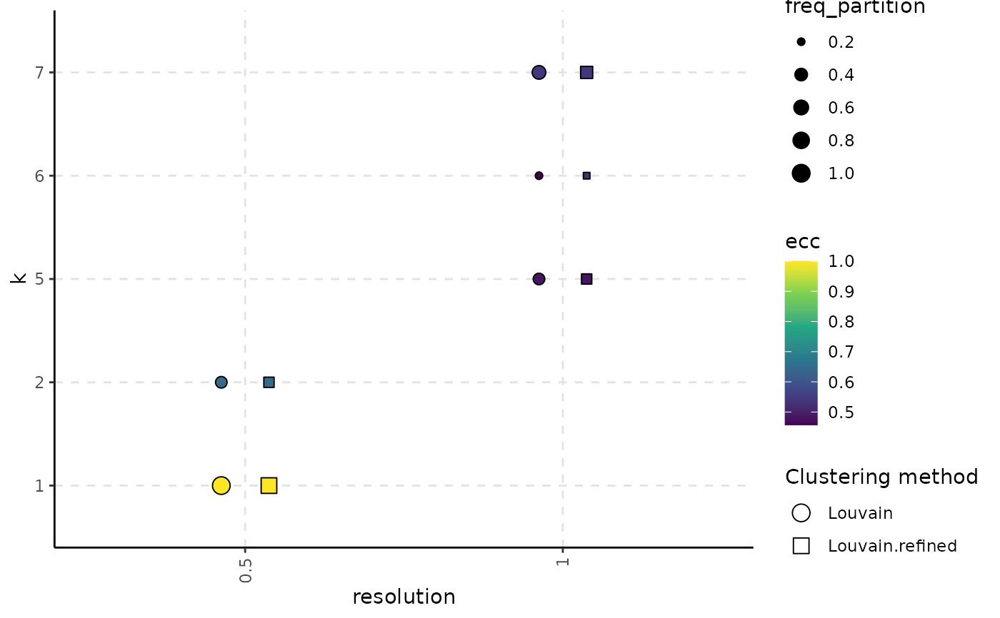

R/stability-3-graph-clustering.R
plot_k_resolution_corresp.RdFor each configuration provided in the clust_object, display what number of clusters appear for different values of the resolution parameters.
An object returned by the
assess_clustering_stability method.
String that specifies the information type that
will be illustrated using gradient colour: either freq_part for the
frequency of the most common partition or ecc for the
Element-Centric Consistency of the partitions obtained when the the number
of clusters is fixed. Defaults to ecc.
Used for adjusting the distance between the boxplots
representing a clustering method. Defaults to 0.3.
Indicates the minimum and the maximum size a point
on the plot can have. Defaults to c(1.5, 4).
The function that will be used to summarize the
distribution of the ECC values obtained for each number of clusters. Defaults
to median.
A ggplot2 object. Different shapes of points indicate different parameter configuration, while the color illustrates the frequency of the most common partition or the Element-Centric Consistency of the partitions. The frequency is calculated as the fraction between the number of total appearances of partitions with a specific number of clusters and resolution value and the number of runs. The size illustrates the frequency of the most common partition with k clusters relative to the partitions obtained with the same resolution value and have k clusters.
set.seed(2024)
# create an artificial PCA embedding
pca_embedding <- matrix(runif(100 * 30), nrow = 100)
rownames(pca_embedding) <- paste0("cell_", seq_len(nrow(pca_embedding)))
colnames(pca_embedding) <- paste0("PC_", 1:30)
adj_matrix <- getNNmatrix(
RANN::nn2(pca_embedding, k = 10)$nn.idx,
10,
0,
-1
)$nn
rownames(adj_matrix) <- paste0("cell_", seq_len(nrow(adj_matrix)))
colnames(adj_matrix) <- paste0("cell_", seq_len(ncol(adj_matrix)))
# alternatively, the adj_matrix can be calculated
# using the `Seurat::FindNeighbors` function.
clust_diff_obj <- assess_clustering_stability(
graph_adjacency_matrix = adj_matrix,
resolution = c(0.5, 1),
n_repetitions = 10,
clustering_algorithm = 1:2,
verbose = FALSE
)
plot_k_resolution_corresp(clust_diff_obj)
